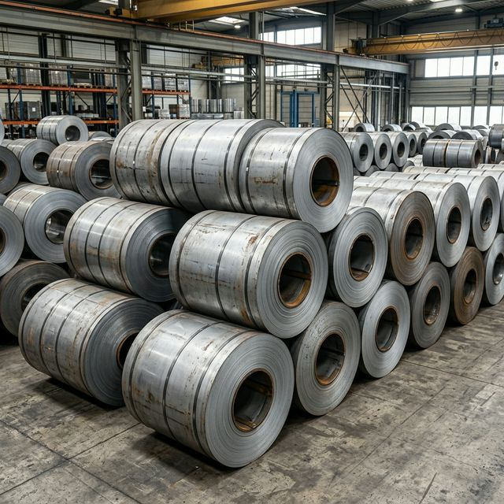

HR vs CR Steel: Key Differences, Uses & How to Choose

When sourcing flat steel products, the choice between Hot Rolled (HR) and Cold Rolled (CR) steel is one of the most fundamental decisions a buyer makes. Both start from the same raw material — steel slabs — but their manufacturing processes produce very different end products.
What is Hot Rolled (HR) Steel?
Hot Rolled steel is produced by rolling steel slabs at extremely high temperatures — above 1,000°C (the recrystallization temperature). At these temperatures, the steel is malleable and can be formed into large sections with relative ease.
After rolling, the steel is allowed to cool naturally. This process results in a product with:
- A slightly rough, scaled surface (mill scale)
- Rounded edges and corners
- Wider dimensional tolerances
- Residual internal stresses that are minimal
Indian Standard: IS 2062:2011 (structural), IS 1079:2009 (commercial quality HR)
What is Cold Rolled (CR) Steel?
Cold Rolled steel (also called CRCA — Cold Rolled Close Annealed) starts as HR steel that undergoes further processing at room temperature. The HR coil is pickled (acid-washed to remove scale), then rolled through reduction mills at ambient temperature, and finally annealed (heat-treated in a controlled atmosphere) to restore ductility.
This additional processing yields:
- A smooth, bright surface finish (matte or mirror)
- Tighter dimensional tolerances (±0.01 mm possible)
- Higher strength (work-hardened)
- Better formability (especially in DQ/DDQ grades)
Indian Standard: IS 513:2008
Head-to-Head Comparison
| Property | HR Steel | CR Steel |
|---|---|---|
| Rolling Temperature | Above 1,000°C | Room temperature |
| Surface Finish | Rough (mill scale) | Smooth (matte/bright) |
| Dimensional Tolerance | ±0.1 – ±0.3 mm | ±0.01 – ±0.05 mm |
| Thickness Range | 1.6 mm – 25+ mm | 0.4 mm – 3.2 mm |
| Yield Strength | 250–410 MPa (grade-dependent) | Higher due to work-hardening |
| Formability | Good for bending, welding | Excellent for deep drawing |
| Cost per MT | Lower (₹48K–58K typical) | Higher (₹58K–72K typical) |
| Edge Type | Mill edge / slit edge | Trim edge (standard) |
| Paintability | Requires surface prep | Ready for painting/coating |
When to Use HR Steel
- Structural fabrication — Beams, columns, base frames
- Pipe and tube manufacturing
- General engineering where surface finish isn't critical
- Automotive chassis and undercarriage components
- Construction — TMT bar, structural angles
- Any application where cost efficiency outweighs surface finish needs
When to Use CR Steel
- Automotive body panels — Hood, doors, fenders
- White goods — Washing machines, refrigerators, ACs
- Electrical panels and enclosures
- Furniture and racking
- Precision stamped parts
- Any application requiring tight tolerances, smooth finish, or subsequent coating
Can CR Be Used Instead of HR (and Vice Versa)?
Generally, no. They serve different purposes:
- CR cannot match HR in thick gauges (above 3.2 mm) — if you need 6mm+ plates, HR is the only option
- HR cannot match CR in surface quality — if the end product is visible (appliance body, painted panels), CR is necessary
- For galvanising, CR is the base material for GP and GPSP sheets
Aggarwal Steels supplies both HR and CR from all major Indian mills — AM/NS, SAIL, Tata Steel, JSW, and JSPL. Get live pricing on our website and order with full GST invoicing.